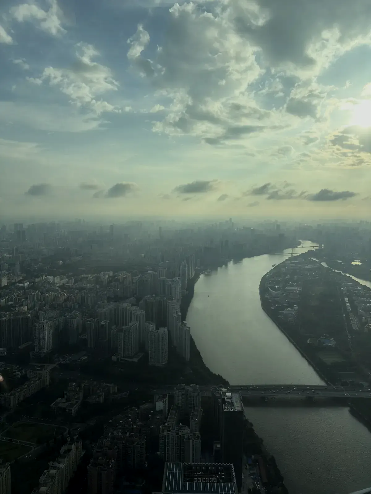
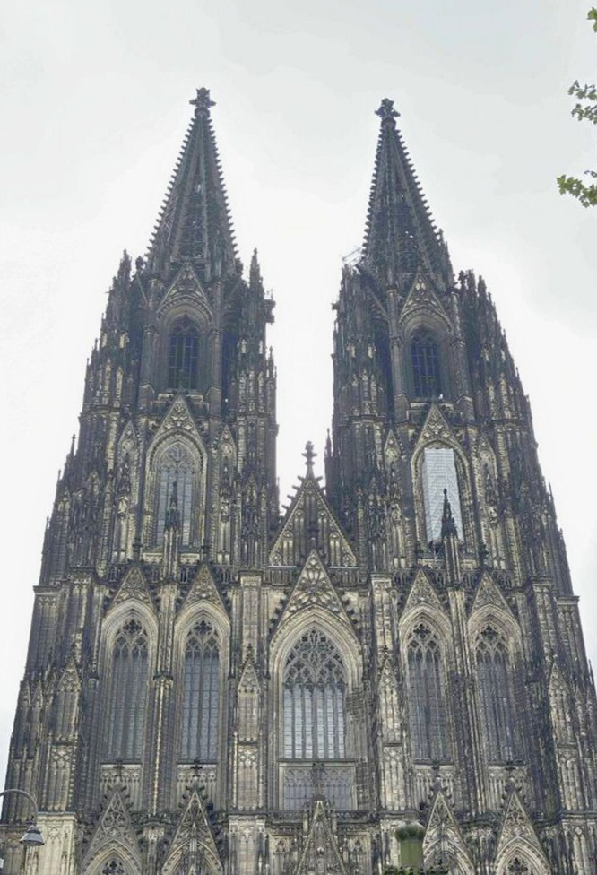
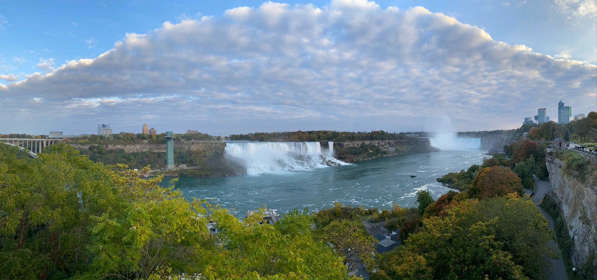
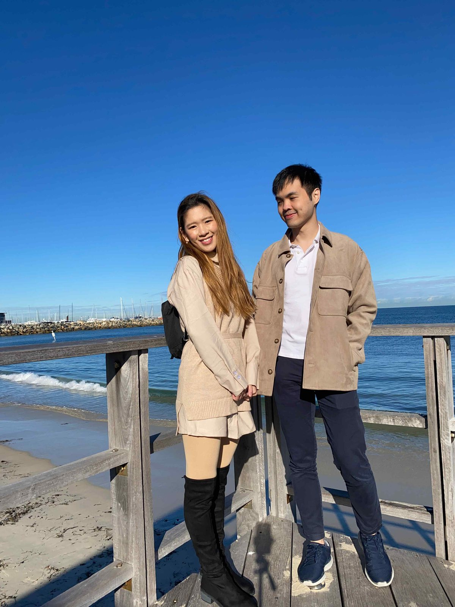

Chengdu & Zhangjiajie
Travel
Dujiangyan · Chengdu · Wulingyuan · Tianmen Mountain
Places, meals, and little moments from the road.
Choose a topic to find matching photos.
Select a destination to browse trip stories and photos.
Pick a trip · scroll to zoom · drag to move · select a region or stop
Regional view
Newest first
Travel
Dujiangyan · Chengdu · Wulingyuan · Tianmen Mountain
Travel

Old Guangzhou · Chimelong · Baiyun Mountain · Canton Tower
Travel
Our last long trip before getting the cats. We both got food poisoning at the end.
Travel
Melbourne and Sydney for our honeymoon.
Work & Travel

Three weeks of work in Germany, with weekend trips around North Rhine-Westphalia.
Travel

Travelling to the USA & Canada. Thanks Clare for hosting us!
Travel

Travelling to Perth and getting engaged!
Travel
Travelling to Europe for the first time!
Work & Travel
A year of travelling and working!
Travel
Visiting Yingxian during her exchange at Yonsei University.